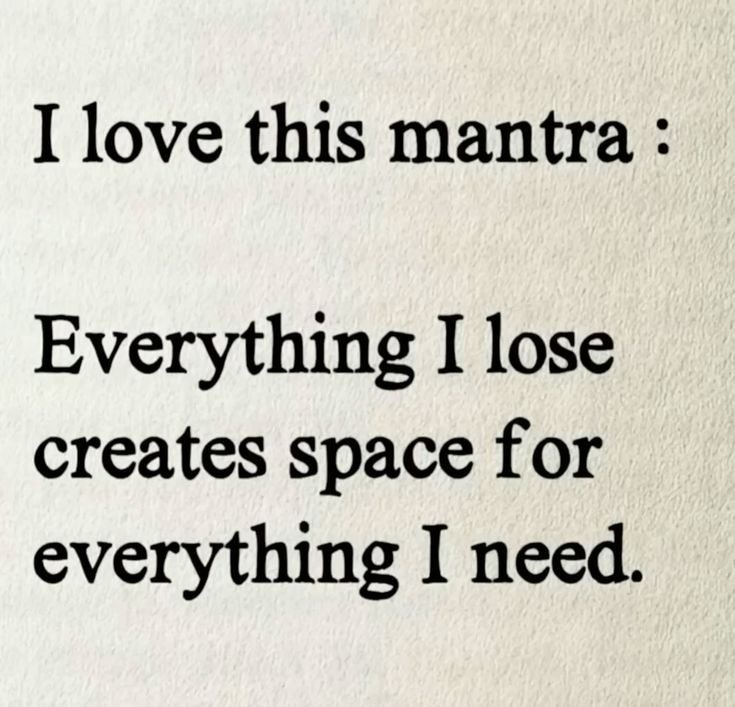
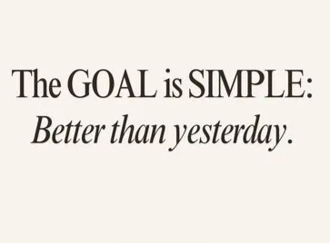

🌸 The Not-So-Professional Section
This isn’t about work. This is about those random 2 AM ideas, mini obsessions, and little things that make me…. me. Feel free to scroll ...you never know …we might just vibe together!
💭 Dream Products I Wanna Build Someday
I believe building good products isn’t just about solving problems, it’s about creating safe, validating experiences. That’s why I build through emotions first.



Things I randomly love
🌌 The stars and the sky
☕ Coffee (specifically in mugs that feel like home)
🌺 Cute Pinterest doodles
🎆 Fireworks that light up the sky!
🍫 Chocolates
🦋 Butterflies
💙 Bubbles from Powerpuff Girls
🌼 Daisies
🦁 Lions
Topics I Can Ramble About For Hours
- Self-improvement and emotional intelligence, but like... without the “hustle bro” energy
- Emotional UX (making things feel safe, not just work right)
Thanks for scrolling through my chaos corner 🌟 If any of this made you smile, feel seen, or sparked an idea, let's vibe sometime.
💭 Dream products I wanna build someday
Dream product
A Dream Interpreter App
Something that decodes chaos dreams without judging your subconscious and ACTUALLY helps you understand your subconscious in a way that doesn’t feel like a Google doc from 2008.
Dream product
A Pomodoro App, but for emotions/feelings
A guided emotional regulation app that works like a Pomodoro timer, but instead of helping you finish tasks, it helps you process how you feel.
When users are overwhelmed, sad, angry, stuck, or even happy, the app gives them short, psych-backed interventions with built-in timers. The goal: transform messy emotions into manageable, structured micro-actions.
Dream product
A Survival Mode Journal
For people who can't even begin to heal yet because they're still trying to make it through the week.
Dream product
An app just for PMs
A place where you can get started with your pm journey.When I started my PM journey it was bits and pieces form free resource I could find.
*Not like a generic video lesson/ “structured course” But something that's 100% hands on enough for a beginner to start a portfolio.
And a linkedin-just for PMs*
Inspiration from Pro app for designers.
Dream product
POV: The Vibe Compass
(currently in the making)
To design emotional experiences using color psychology, storytelling, and tools that feel like a cozy hug.
Dream product
The MAIN CHARACTER App
Main Character App concept boils down to:
- Core emotional hook: “You’re already the star of your own story — now see it, feel it, and own it.”
- Core function: Track small wins (your “votes” toward the person you want to be) in a mental portfolio.
- Differentiator: Instead of standard journaling (gratitude lists, free-form writing), this is data + narrative — the app turns your wins into a story or even a “movie” of your life with AI.
- Long-term vision: AI writes and/or visualizes your “life story” based on your tracked wins.
Inspiration:
Atomic Habits’ identity-based habits + “every win is a vote” philosophy.